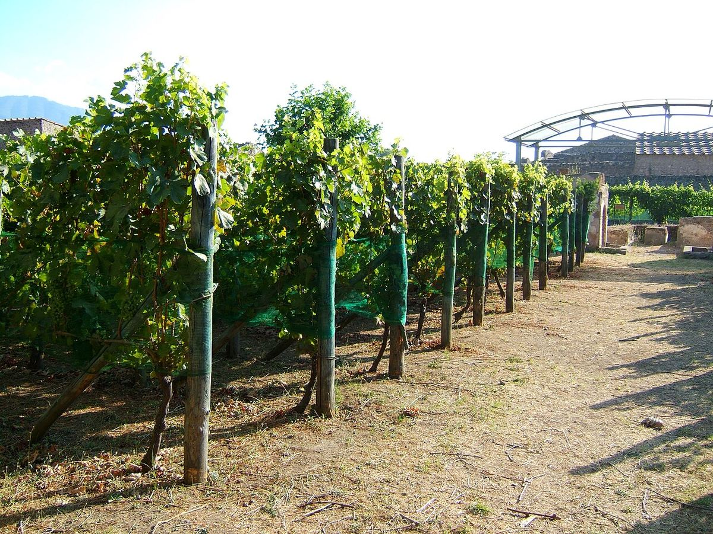

RED
Historic family winery in Atripalda, in Irpinia, credited with saving varieties such as Aglianico, Fiano and Greco from oblivion after the Second World War.

The Mastroberardino family has been linked to wine in Irpinia for several generations, and its winery at Atripalda, near Avellino, is one of the oldest in Campania. By the nineteenth century the family was already trading its wines outside the region.
After the Second World War, at a time when many local growers were abandoning traditional varieties in favour of more productive grapes, Antonio Mastroberardino chose to preserve and replant Aglianico, Fiano and Greco. This work is regarded as decisive for the survival of these varieties and for the later recognition of the Irpinian appellations; Taurasi was the first DOCG in southern Italy.
The winery is also known for its collaboration with the archaeological authority of Pompeii: in vineyards within the ancient city, varieties grown in Roman times have been replanted as part of a research project on ancient viticulture.
The family still runs the business today. Its range includes Radici Taurasi, one of the area’s best-known wines, whites from Fiano di Avellino and Greco di Tufo, and Lacryma Christi del Vesuvio.
It offers tours of its historic cellars in Atripalda, by prior booking.